Which would you rather use / read / trust? (X or Y)
X
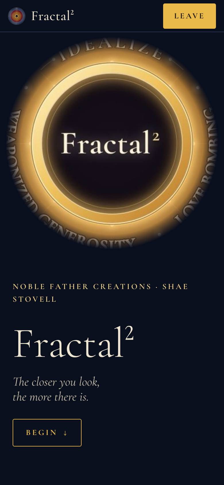
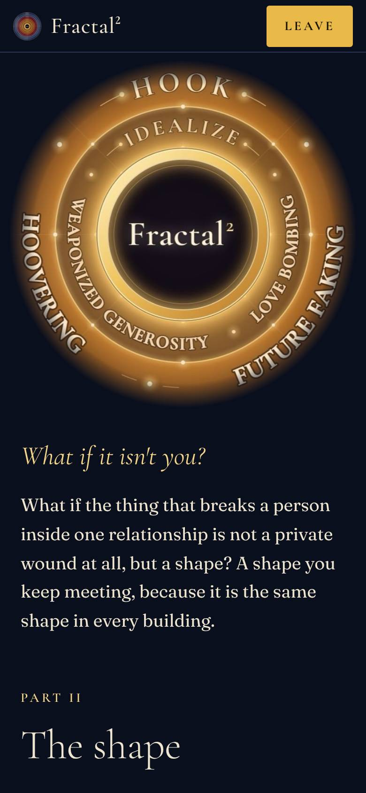
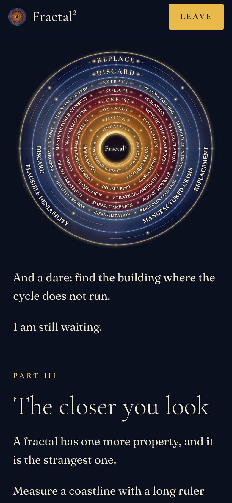
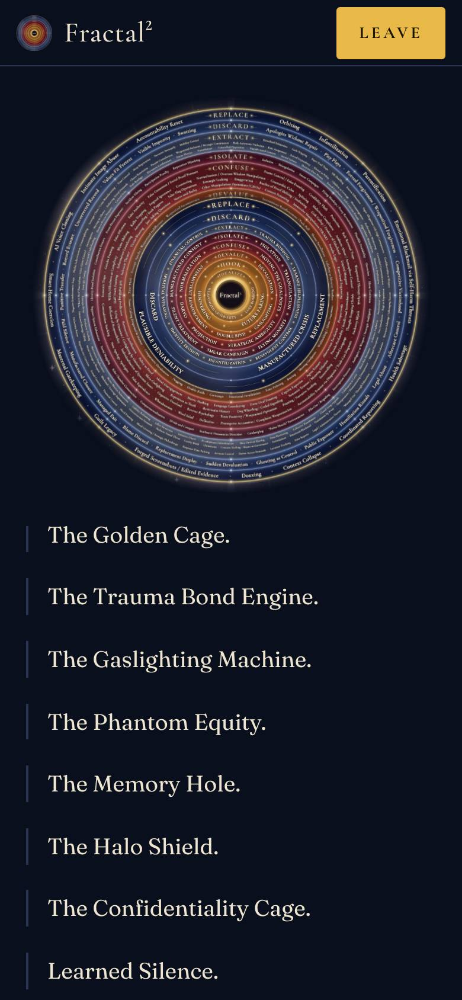
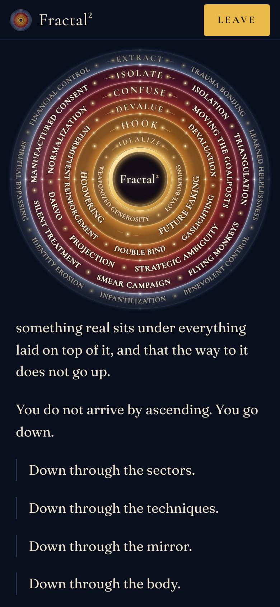
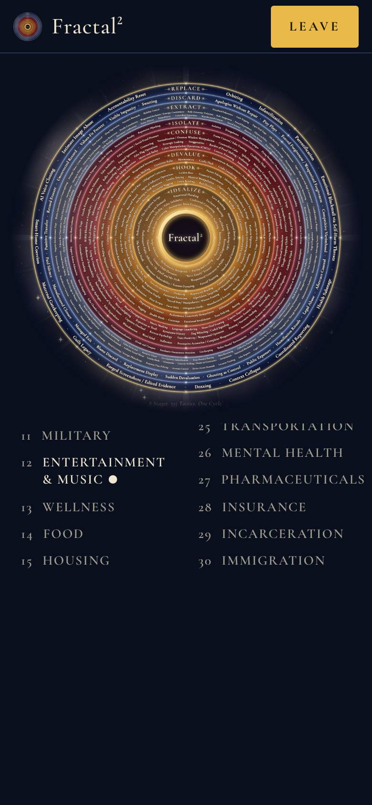
Y
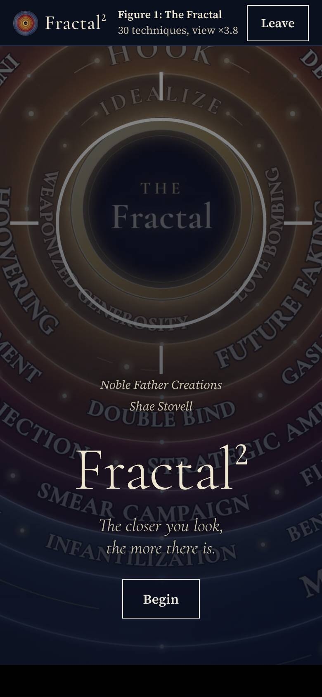
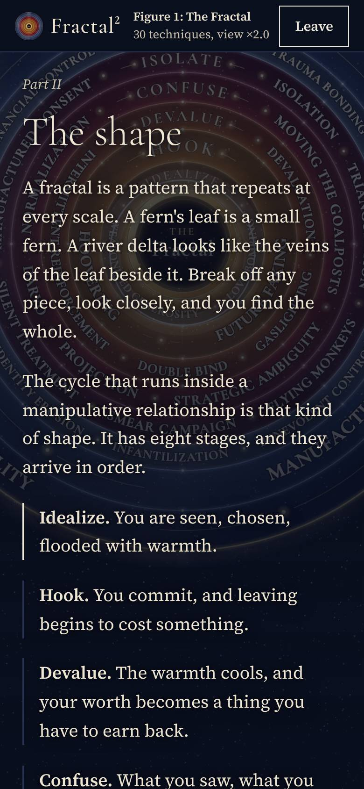
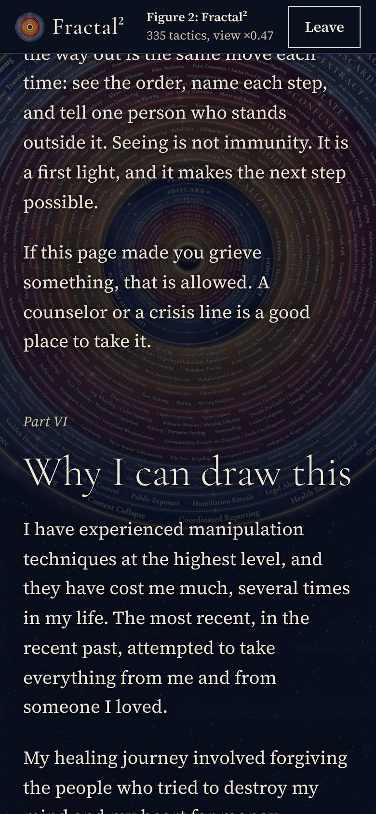
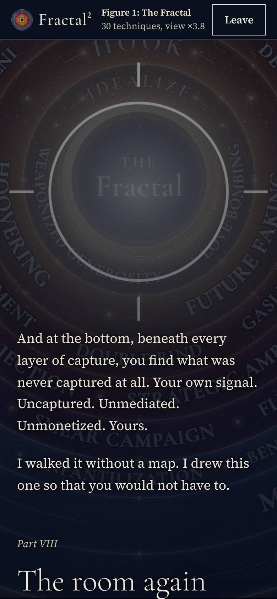
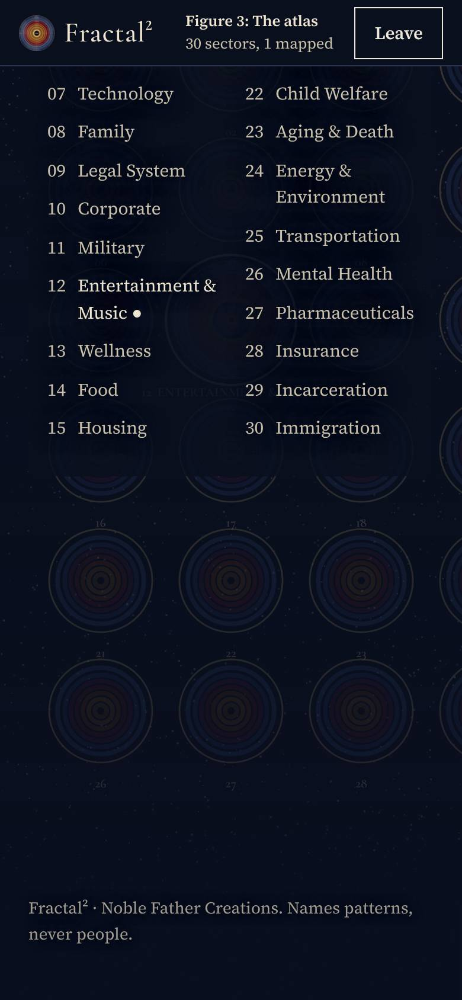
Ask the judge (record answers on paper)
- Which looks more like a finished, professional piece? X / Y / same
- Which feels more like this subject and not any website? X / Y
- Which is easier to read? X / Y
- Which would you scroll further in? X / Y
- What is the one thing you'd change in each?